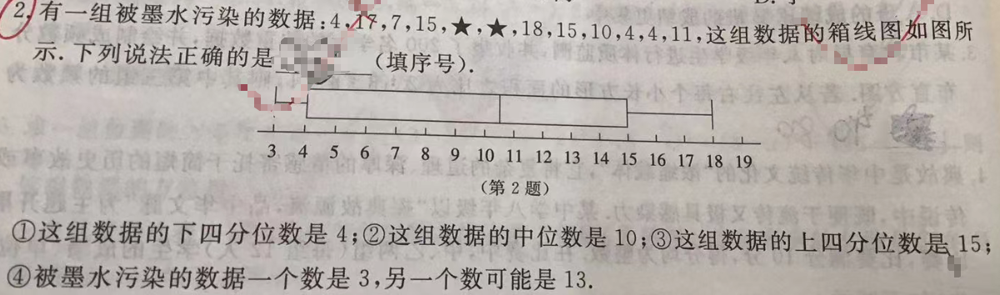

📷 点击查看原图
有一组被墨水污染的数据：，这组数据的箱线图如图所示。下列说法正确的是 ______（填序号）。
这组数据的下四分位数是 ；
这组数据的中位数是 ；
这组数据的上四分位数是 ；
被墨水污染的数据一个数是 ，另一个数可能是 。
| 知识点 | 说明 |
|---|---|
| 箱线图五数 | 最小值、（下四分位数）、（中位数）、（上四分位数）、最大值 |
| 四分位数求法（ 为偶数） | 将数据从小到大排序后均分成两半， 是下半的中位数， 是整体中位数， 是上半的中位数 |
| 时的位置 | 下半 个 ；中位数 ；上半 个 |
| 由箱线图反推数据 | 最小值和最大值直接读取；结合已知数据可推断缺失值 |
共 个数据，其中 个被污染（记为 和 ），其余 个为：
先将这 个已知数据从小到大排序：
观察题目给出的箱线图，可以读出五个关键数值：
| 统计量 | 从图中读取的值 | 含义 |
|---|---|---|
| 最小值 | 左须线的端点在刻度 处 | |
| （下四分位数） | 箱体左边缘在刻度 处 | |
| （中位数） | 约 之间 | 箱体内竖线位置 |
| （上四分位数） | 箱体右边缘在刻度 处 | |
| 最大值 | 右须线的端点在刻度 处（与已知最大值吻合） |
从箱线图的最小值为 可知：全部 个数据中最小的那个是 。而已知的 个数据中最小的是 ，因此被污染的数中必有一个是 。
设 ，另一个被污染的数为 （待确定）。将 加入后， 个数据排序为：
其中 的具体位置取决于它的大小——它可能插在上述序列中的不同位置。
下四分位数是 ？
对于 个数据，下四分位数 等于"下半 个数据的中位数"，即第 、 两个数的平均值。
无论 取何值（只要 ），排序后的前 个数据一定是：
因此：
说法 正确。
中位数是 ？
时，中位数 等于第 个与第 个数的平均值。这两个位置的值取决于 的大小：
由于 不唯一确定，中位数不一定恰好是 （当 时中位数 ）。
说法 不一定正确。
上四分位数是 ？
上四分位数 等于"上半 个数据的中位数"，即第 个与第 个数的平均值。
已知数据中有两个 。无论 取什么值（只要 ），排序后第 、 个位置都会落在那两个 上或之后：
因此只要 （从箱线图 可确认这一点）：
说法 正确。
一个数是 ，另一个可能是 ？
前面已推出：一个被污染的数必定是 （由最小值确定）。
检验 是否满足所有条件：
完全符合箱线图的所有信息，因此"另一个数可能是 "这个说法成立。
说法 正确。
📌 来源：江西中考「统计与概率」真题（2023江西 卷·箱线图判读、2024南昌 模拟·四分位数计算，见 m.51jiaoxi.com/doc-17238521.html、www.zxxk.com/soft/46738031.html）
题1：一组数据 的中位数为 ，求 的值，并求这组数据的四分位数 和 。
💡 答：（因中位数 ）；排序后 ；，。📄 查看详细解答 →
题2：某班 名学生的身高（cm）数据为 。若箱线图显示 ，，求 的取值范围。
💡 答：由 得 （否则前半中位数变）；由 得 （否则后半中位数变大）；故 。📄 查看详细解答 →
题3：一组数据的箱线图如下图所示（五数为 ）。下列结论错误的是（ ）
A. 这组数据的中位数是 B. 这组数据的四分位距（IQR）是 C. 这组数据的极差是 D. 这组数据的平均数大于中位数
💡 答：D。IQR ✓；极差 ✓；中位数 ✓；但仅凭箱线图无法确定平均数（不知道每个数据点的具体分布），所以 D 无法判断、是错误的结论。📄 查看详细解答 →
📌 来源：与 p11"箱线图·四分位数"同主题的进阶练习